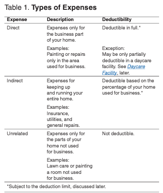

Are you a business owner who works from home? Don't lose money to taxes by not claiming a deduction for business use of your home. A "home" includes a house, apartment, or even a boat. It just needs basic living space. Come learn how to easily report this deduction.

You might be able to claim a significant tax deduction for the business use of your space. If you're working from the comfort of your own home, whether that's a cozy apartment, a sprawling house, or even a unique living space like a boat, you might be able to save on taxes.
What does it take to qualify? Whether you're storing inventory or using a part of your home as an office, there are specific criteria to meet. Daycare providers, you're in for some special rules tailored just for you.
Once you qualify, you're ready to calculate your deductions. There are two ways to do this: the detailed route of itemizing actual expenses or opting for the simplified method, which will save you time and paperwork.
This brief on IRS Publication 587, Business Use of Your Home, speeds up securing your home office deduction. Pub 587 is 34 pages long. This is compressed so refer to the official publication when making decisions for the most up-to-date policies and procedures.
To claim deductions for the business use of your home, you must meet specific criteria. Normally, common home expenses like mortgage interest, real estate taxes, and utilities aren't deductible as business expenses. But, if part of your home is used exclusively and regularly for business purposes, you may be eligible for deductions. This includes using your home as your principal place of business, meeting clients or customers, using a separate structure on your property, or using your home for storage related to your business.
To qualify for home office deductions, the space must be used:
To qualify for the home office deduction under the exclusive use test, a specific area of your home must be used only for your trade or business. This area could be a room or another defined space, and it doesn't require a permanent partition to qualify. However, if the space is used for both business and personal activities, it does not meet the exclusive use criterion.
For example, if you are an attorney using your home den to write legal briefs, but your family also uses it for recreation, you cannot claim a deduction for its business use.
You can claim home office expenses without meeting the exclusive use test if you use part of your home to store inventory or product samples for your business. To qualify, you must:
For instance, if you sell mechanic's tools and use half of your basement for storage while occasionally using it for personal purposes, you can still deduct expenses for this space.
If you use part of your home as a daycare facility, the exclusive use requirement does not apply.
Outside of these two exceptions, any part of your home used for business must pass the exclusive use test to qualify for deductions.
To meet the regular use test, you need to use a designated area of your home for business activities on a consistent basis. Using the space occasionally is not enough. When determining if your usage qualifies as regular, you should assess all relevant facts and circumstances. Regular use is key to establishing that part of your home is genuinely dedicated to your business activities.
To pass the trade-or-business-use test, you must use a portion of your home specifically for your trade or business activities. Simply engaging in profit-seeking activities does not qualify unless they are part of an established trade or business.
For example, if you use a part of your home to read financial periodicals and engage in investment-related activities for personal investment purposes, and not as a professional broker or dealer, these activities do not qualify as a trade or business. Therefore, you cannot claim a home office deduction. This test emphasizes the need for the space to be used in connection with a genuine business operation.
If you operate a trade or business from multiple locations, including your home, your home may qualify as your principal place of business under certain conditions. To determine if your home office meets this criterion, you should evaluate two key factors:
Your home office will qualify as your principal place of business if:
Your home office can serve as the principal place of business for more than one distinct trade or business. However, it's important to evaluate each business activity separately to determine if the office qualifies as the principal place of business for each.
To qualify for deductions for multiple businesses, it must be used exclusively and regularly for the following purposes:
If your home serves as a place where you meet with patients, clients, or customers as part of your business operations, you may be eligible to deduct expenses for the part of your home used for these meetings. This is possible even if you conduct business activities at another location. To qualify for such deductions, you must meet both of the following criteria:
This requirement is typically met by professionals like doctors, dentists, attorneys, etc., who maintain offices in their homes specifically for these purposes. However, merely using your home for occasional meetings or telephone calls does not qualify for home office deductions. Importantly, the area used for meetings does not need to be your principal place of business, but it must be used exclusively and regularly for business meetings.
There are two ways for figuring your home office deduction: the simplified method and using actual expenses. You can choose which one to use each year meeting applicable requirements.
If the simplified method is not suitable or available for your situation, calculate your deduction using actual expenses.
Part-Year Use: You can only deduct expenses for the part of the year your home was used for business. For example, if you start using your home for business on July 1, only calculate your expenses from July to the end of the year for your deduction.
When using actual expenses, you must allocate the costs between personal and business use.
Type of Expense: Is it a direct expense (solely for the business part of your home), an indirect expense (for keeping up and running your entire home), or unrelated to the business use of your home.
Business Use Percentage: The percentage of your home used for business is used to calculate indirect expenses you can allocate towards your home office deduction.
Calculating Business Percentage of Home Use
To accurately claim home office deductions, it's essential to determine the business percentage of your home. This percentage is based on the proportion of your home that is used for business activities and is crucial for calculating the deductible portion of home operating expenses.
Methods for Determining Business Percentage
Use any reasonable method to determine the business percentage. Here are two common approaches:
Area: Calculate the area (l*w) of the space then divide it by the total area of your home. For example, a home office is 100 square feet (10’ x 10’) and your total home area is 1000 square feet, your business percentage is 10%.
Room: If the rooms in your home are approximately the same size, divide the number of rooms used for business by the total number of rooms. For example, you use one room as an office and your home has ten rooms, your business percentage is 10%.
Understanding the Limitations
It's important to understand how gross income from your business affects the deductible amount of your home office expenses.
Full Deduction Eligibility: If the gross income from your home-based business equals or exceeds your total business expenses (which include depreciation), you can deduct all your business expenses related to the use of your home.
Deduction Limitations: However, if your business's gross income is less than your total business expenses, the amount you can deduct for certain home-related expenses may be limited.
First, take the gross income from the business use of your home…
Then subtract the business portion of expenses that you would be allowed to deduct regardless of business use:
Next, subtract other business expenses that are directly related to your business but not to the use of the home itself:
After subtracting these amounts, the remaining limit is what you can claim for otherwise nondeductible home expenses such as utilities, insurance, and home depreciation. Depreciation of the home is calculated last.
The simplified method offers an easier way to calculate your home office deductions without needing to track and allocate actual expenses. With this method, you calculate your deduction by applying a set rate of $5 per square foot to the area of your home that's used for business. The maximum area you can use for this calculation is capped at 300 square feet. This straightforward approach minimizes the complexity involved in documenting and substantiating your home office expenses.
Implications of Choosing the Simplified Method
When you opt for the simplified method to calculate your home office deductions, it streamlines the process but comes with specific limitations:
Switching back to actual expenses in subsequent years requires using the appropriate depreciation tables for Modified Accelerated Cost Recovery System (MACRS) to calculate depreciation. This approach to home office deductions simplifies the process for some but may lead to different financial outcomes depending on your specific expenses and business use of the home.
When it comes to deducting expenses, maintaining thorough and organized records is crucial. You are not required to follow a specific recordkeeping method, but your records must be detailed enough to verify your deductions.
Keep records for as long as they are needed for tax purposes, generally the later of:
Depreciation of you Home:
For more detailed guidelines on recordkeeping practices, refer to IRS Publication 583, "Starting a Business and Keeping Records." By keeping accurate and comprehensive records, you can ensure that you are prepared to substantiate your home office deductions in the event of an IRS inquiry or audit.
 Alex Bermudez
Alex Bermudez